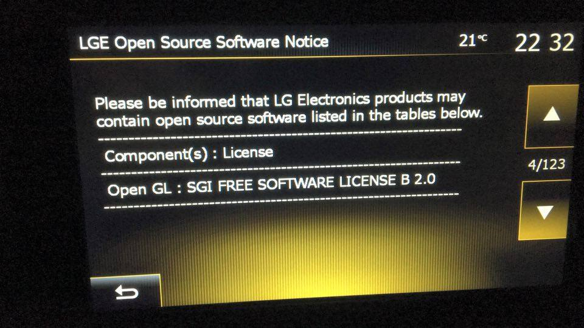

|
Neste artigo será apresentado o projeto que permite o desenvolvimento multiplataforma com Python utilizando o framework Kivy. |
INTRODUÇÃO
A biblioteca Kivy é um framework para desenvolvimento multiplataforma, escrito majoritariamente com a linguagem Python e/ou Cython e que permite o desenvolvimento de aplicações para diversos sistemas operacionais, tais com, Microsoft Windows, Linux, Mac, Android, iOS, Raspberry utilizando um mesmo código.
O projeto Kivy é composto por vários subprojetos, cada um especializado numa determinada tarefa, como por exemplo, gerar executável para determinada plataforma ou então, uma interface que permite o acesso ao hardware em várias dispositivos com diferentes sistema operacional utilizando um mesmo código.
É importante não confundir a projeto Kivy com a biblioteca Kivy. O projeto Kivy, cujo site é http://kivy.org é composto por vários subprojetos, dentre estes, a biblitoeca Kivy.
A BIBLIOTECA KIVY
A biblioteca Kivy contém o código de UI (User Interface) interface de usuário multiplataforma executado sob a biblioteca OpenGL. Toda parte gráfica da biblioteca é executado em cima da placa de vídeo, por essa razão, a performance em algumas situações chega a ser superior a renderização nativa de alguns sistemas operacionais.
Em vista de que a biblioteca OpenGL é multiplataforma, o projeto Kivy, construído em cima dessa camada, pode ser executado em qualquer dispositivo que possua suporte com a biblioteca OpenGL.
OpenGL 2.0
OpenGL é uma API e uma linguagem de programação multiplataforma e o termo OpenGL vem de Open Graphics Library`, numa tradução livre seria Biblioteca Gráfica Aberta. O seu uso permite o fácil desenvolvimento de aplicações gráficas, inclusive com ambientes 3D que podem ser executado em praticamente todos sistemas operacionais e nos principais dispositivos. A biblioteca é amplatamente utilizada em jogos e em tudo que esteja relacionado com gráficos.
O objetivo é tornar a comunicação transparente aos desenvolvedores, disponibilizando uma API que faz o "meio de campo" entre o programador que utiliza as funções da API e os mais variados harwares de vídeo. Dessa forma, não precisamos nos preocupar se a placa de vídeo é Intel, Nvidia ou Xingling, pois a biblioteca OpenGL torna o desenvolvimento transparente.
O núcleo do OpenGL é conhecido como "rendering pipeline" ou dutos de renderização. Podemos utilizar a biblioteca tanto com o desenhos vetoriais, definidos por vértices, como com mapas de bits, desenhos construídos pixel-a-pixel.
Os desenvolvedores de hardware conseguem criar extensões, inovando e diferenciando seus produtos, sem a necessidade de alterar a biblioteca e as atualizações, raramente obrigam os usuários da API OpenGL a alterarem os seus códigos.
As extensões fornecem aos desenvolvedores de aplicativos os novos recursos de renderização e permite ir além das características especificadas na norma oficial do OpenGL (o padrão). Extensões da OpenGL mantém a API atual com as últimas inovações em hardware gráfico e algoritmos de processamento.
Por fim, a biblioteca OpenGL é vastamente utilizada, inclusive, podemos ver na foto a seguir, um sistema utilizado em automóveis brasileiros de nome LGE sendo utilizado como biblioteca gráfica.
Tirei a foto no carro do meu amigo Daniel Mello quando fomos buscar uma pizza. O sistema operacional a princípio parece ser proprietário e é desenvolvido pela LG, porém, o código fonte está disponível segundo a documentação oficial, porém, não encontrei onde. No Brasil o sistema vem sendo chamado de Media Nav.
Kivy e OpenGL
O framework Kivy está construido sob a API OpenGL 2.0 e possui muito do seu código-fonte escrito com a linguagem OpenGL que possui sintaxe identica a linguagem C. Os módulos de integração com a API OpenGL podem ser considerados o núcleo da biblioteca Kivy e também, o código mais complexo a ser estudado.
O Kivy não utiliza funções gráficas do sistema operacinal hospedeiro, logo, os componentes são desenhados do zero e portanto, aplicações Kivy, terão o mesmo visual em todas as plataformas. Essa é a parte boa. A parte ruim é que se desejarmos que o nosso App utilize o leiaute do sistema operacional hospeiro, teremos que desenvolver por conta própria.
Existe versões em desenvolvimento que implementam o padrão gráfico do Material Design, e muito provavelmente, alguém já está desenvolvendo uma versão que utilize os padrões do iOS. Porém, é importante saber que esses são projetos de terceiros, por isso, não há suporte oficial.
É importante dizer que a biblioteca Kivy utiliza a API OpenGL 2.0, enquanto que a última versão da biblioteca OpenGL é a 4.5.
Para consultar a documentação do projeto OpenGL utilize este link.
|
A biblioteca Kivy é multiplataforma por causa que a biblioteca OpenGL. |
d
O PYTHON
A biblioteca inicialmente foi escrita para a versão 2x do Python e recentemente (2016) foi publicado o suporte experimental à versão 3x . Ainda que o suporte seja experimental, há casos de sucesso utilizando a versão 3x.
Mesmo assim, a versão do Python amplamente suportada ainda é a 2x e algumas plataformas, como por exemplo o Mac OSX, ainda não possuem suporte para gerar executáveis utilizando as últimas versões.
O desenvolvimento utilizando a versão 2x e 3x são iguais, salvo a manipulação de String que, na versão 2x do Python possui um tratamento diferente, ou seja, as cadeias de caracteres não são Unicode por padrão.
Projetos escritos com a versão 3x do Python podem ser convertidos para a versão 2x utilizando utilitários como por exemplo o 2to3 que, mesmo não sendo perfeito, resolve a maioria dos problemas de conversão.
Por fim, é importante dizer que o buildozer, projeto que gera executáveis para as mais diversas plataformas pode ser baixado junto com uma versão do Lubuntu para as versões 2x, ou seja, a forma mais utilizada na geração de executáveis ainda é a versão 2x.
KIVY DESIGN

Kivy Design é um projeto de construção de uma IDE RAD para desenvolvimento de aplicações gráficas com Python utilizando a biblitoeca kivy. A proposta é a construção do sonho de todos programadores: um ambiente de completo, estável, para a construção de aplições, seja para o Prompt de Comando, seja para aplicações gráfica para Desktop, Mobile e Web.
O projeto Kivy Design objetiva fazer jus a todo o trabalho e esforço empreendido na construção da biblioteca Kivy e fornecer um ambiente para a construção de aplicações gráfica que tenha tanta qualidade como a biblioteca Kivy.
A IDE vem sendo desenvolvido, obviamente, com o framework Kivy, então, talvez este venha a ser a primeira IDE RAD (Rapid Application Development) multiplaforma e multidispositivo do mundo. O mais legal é que temos a oportunidade de participar do desenvolimento da IDE e assim, trabalhar para construir uma ferramenta que seja como sempre desejamos que ela fosse.
Uma das razões do código do Kivy Design ser tão simples é que tudo ainda está no começo, por isso tanta simplicidade. E, essa é a parte boa, ou seja, temos a oportunidade de acompanhar o crescimento do código e ir assimilando naturalmente e participando da construção de um grande software!
ESTADO DO PROJETO KIVY DESIGN
Neste momento, ainda que seja possível executar o projeto Kivy Design, não é recomendável sua utilização, até porque, o mesmo está caindo (travando) a todo momento.
Caso queiras se divertir, toda vez que Kivy Design travar, é impresso o local em que ocorreu o problema, logo, poder ir até lá e tentar corrigir. O interessante é que a maior parte das vezes em que o Kivy Design trava, o problema não está em seu código, mas sim, no código da biblioteca Kivy.
Falando de maneira geral, o framework Kivy não faz um forte tratamento e verificação quando novos valores são atribuido para propriedades de um Widget. Se a propriedade estiver esperando uma Tupla e for enviado um dicionário, ocorre um erro na biblioteca, o que acaba por derrubar toda a IDE. A princípio, e, pelo que entendi, os desenvolvedores não tem interesse de fazer esse tipo de tratamento por questões de performance.
PROJETO garden
O Projeto Garden centraliza componentes não oficiais de código-fonte aberto e distribuido sob a licença MIT desenvolvido por terceiros. Pense neste projeto como um centralizador de códigos de diferentes usuários cuja finalidade é distribuir e compartilhar módulos prontos para ser utilizado.
Todos os pacotes Garden estão armazenados no Github, dentro do projeto Kivy, ou seja, no mesmo local em que baixamos o código fonte da biblioteca Kivy.
O projeto Garden não está mais sendo entregue junto com o código do framework Kivy, por isso, agora, é necessário instala-lo manualmente. Para isso, vá no Terminal e digite:
pip install kivy-garden
Vale dizer que todos são incentivados a colaborar com os pacotes existentes ou então, pela criação de novos módulos independentes. Inclusive, existe um sistema de premiação simbólica para aqueles que tenham colaborado.
PROJETO Buildozer
O objetivo deste projeto, segundo a própria documentação oficial, é, através de um arquivo de nome "buildozer.spec" que contém uma lista de parâmetros que devemos definir, como por exemplo, título, ícone, módulos de terceiros (pacotes Python) e etc, gerar executáveis para as plataformas suportadas pelo projeto. Assim, definimos num único local as configurações do nosso App e em seguida, geramos um executável para a plataforma desejada.
É importante dizer que o projeto Buildozer não implementa como o App será gerado, o que o mesmo faz, é servir como uma aplicação comum que analisará as informações e passará ao projeto especializado na geração.
Então, não devemos pensar no Buildozer como um mega projeto que gera executáveis para várias plataformas, o seu principal objetivo é ler os valores definidos no arquivos "buildozer.spec" e envia-las ao projeto python-for-android ou ao projeto kivy-ios.
O suporte a outras plataformas está previsto, porém, não existe qualquer informação adicional publicada, muito menos data prevista.
PROJETO python-for-android
O projeto python-for-android é um subprojeto do projeto Kivy e seu objetivo é gerar executáveis para a plataforma Android.
Este projeto utiliza várias linguagens de programação, como por exemplo, C, C++, Cython, Python e Java. O C e o C++ são utilizados para trabalhar nativamente com a API do Android, o Android NDK . O Cython faz a conversão do código Python para código C nativo e o código Java é utilizado para acessar a API nativa do Android.
O App para a plataforma Android é gerada através de um projeto construído com o AndroidStudio onde uma parte é nativa, ou seja, escrita com C e C++, outra parte utiliza a linguagem Java, outra parte utiliza o projeto PyJNIus e claro, tudo isso está integrado com a linguagem Python.
Por essa razão, é correto dizer que o App gerado para a plataforma Android é nativo, até porque, o mesmo é construído através de um projeto nativo fornecido pela empresa desenvolvedora (a Google).
O código Python por nós escrito é compilado com o Cython, ou seja, um projeto que converte código Python para código C nativo, portanto, não é possível a terceiros ler, entender ou robar nossa implementação (facilmente).
Dentro do App gerado (*.apk) contém uma VM do Python modificada, ou seja, todo aplicativo gerado com o Python-for-Android irá contér uma versão do Python modificada, por isso, é possível enviar código Python que será interpretado no dispositivo ou então, o que é o padrão, enviar o código compilado em C otimizado para processadores ARM.
É incorreto dizer que aplicações escritas com a biblioteca Kivy são lentas ou então, que possuem baixa performance! Até porque, o Cython é um projeto amplamente respeitado por sua capacidade em converter código Python para código C puro altamente performático. E também, toda a parte gráfica é executada em cima da placa de vídeo, o que podemos facilmente deduzir, que a performance, algumas vezes, será superior ao código executado pelo processador na geração da parte gráfica.
Talvez, o lado negativo é o tamanho do App que neste momento está ficando em torno de 44 megas, o que é grande se comparado ao tamanho de um App desenvolvido com Java, porém, pequeno, se comparado a capacidade de armazenamento e processamento dos dispositivos móveis atuais.
Por fim, temos que TODA a API escrita em Java pode ser facilmente acessada via Python através do projeto PyJNIus que será explicado em seguida.
PROJETO PyJNIus
O projeto PyJNIus permite acessar a API nativa do Android disponibilizada em classes escritas em Java e que por detrás utiliza a linguagem C++. O PyJNIus acessa as classes em Java, portanto, podemos criar uma class Java e "mapea-la" com o projeto PyJNIus para ser utilizada com a lingaugem Python.
Este projeto é semelhante ao JNI (Java Native Interface) que permite o acesso às classes escritas em Java por outras linguagens.
Dessa forma, conseguimos por exemplo, acessar a classe Intent do Android, ou então, a classe Activity e inclusive, conseguimos desenvolver uma aplicação que rode nativamente em cima da API Java do Android.
A seguir, temos um exemplo, retirado da documentação oficial do PyJNIus em que é feito o acesso a Activity do Android.
from jnius import cast
from jnius import autoclass
# import the needed Java class
PythonActivity = autoclass('org.renpy.android.PythonActivity')
Intent = autoclass('android.content.Intent')
Uri = autoclass('android.net.Uri')
# create the intent
intent = Intent()
intent.setAction(Intent.ACTION_VIEW)
intent.setData(Uri.parse('http://kivy.org'))
# PythonActivity.mActivity is the instance of the current Activity
# BUT, startActivity is a method from the Activity class, not from our
# PythonActivity.
# We need to cast our class into an activity and use it
currentActivity = cast('android.app.Activity', PythonActivity.mActivity)
currentActivity.startActivity(intent)
Observe que estamos utilizando a linguagem Python para trabalhar com classes escritas em Java!
Assim concluímos que a capacidade de desenvolvimento é ilimitada, até porque, podemos acessar nativamente tudo que a plataforma Android disponibiliza, seja através das classe em C++ pelo acesso via NDK,
PROJETO Kivy for iOS
O projeto Kivy for iOS é semelhante ao projeto Python for Android a diferença é o suporte à plataforma iOS.
O App gerado para iOS é feito através de um projeto desenvolvido com o Xcode, portanto, no final, teremos uma aplicação nativa, da mesma forma que temos com o Android.
Internamente, o executável gerado também carregará uma versão otimizada o Python e por isso, é possível executar código Python no dispositivo em que a nossa aplicação estiver sendo executada. Normalmente, o nosso código será compilado com o Cython o que impedirá terceiros de ler e entender nossos códigos (facilmente), até porque, será gerado código C nativo.
O suporte a plataforma iOS não acompanha a plataforma Android, ou seja, uma aplicação híbrida construída com Python e Kivy conseguirá acessar melhor a API do Android do que do iOS (por enquanto).
Como dito anteriormente, não há suporte ao Python 3x para iOS, portanto, temos que converter nosso código escrito com Python 3x para 2x manualmente ou então, utilizando ferramentas como 2to3 disponibilizada oficialmente pelo projeto Python.
PROJETO PyObjus
O projeto PyObjus permite o acesso às classes escritas em Objective-C pelo Python. Desta forma, conseguimos o acesso nativo a toda a API do iOS através do código Python.
A seguir, temos um simples exemplos extraído da documentação oficial da PyObjnus.
from pyobjus import autoclass
NSString = autoclass('NSString')
text = NSString.alloc().initWithUTF8String_('Hello world')
print text.UTF8String() # --> Hello world
Como podemos ver, é importado a classe NSString e em seguida é armazenado o texto Hello World na mesma. Ou seja, desta forma, estamos trabalhando com a API nativa do iOS utilizando a linguagem Python! Portanto, conseguimos desenvolver aplicações que utilizam toda a API nativa da plataforma utilizando código Python.
LINKS EXTERNOS
- Site do projeto Kivy (en)
- Repositório no Github do projeto Kivy (en)
- Código-Fonte da biblioteca Kivy (en)
- OpenGL (en)
- Projeto KivyMD: Kivy Material Design (en)
- Android NDK (en)
Tags python, kivy, android, ios, kivy design, opengl, blog
Comentários
comments powered by Disqus